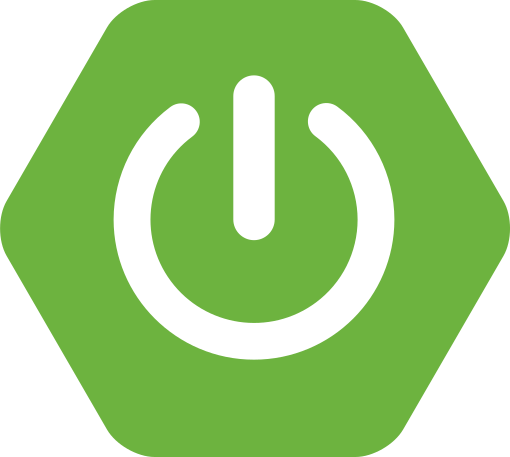
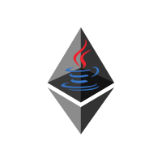

01
2026.08 — 09
모의투자 · 학습 플랫폼
SixFin
모의투자 기록을 분석해 투자 행동을 진단하고, AI 피드백과 학습 자료를 제공하는 서비스입니다.
담당Learning 설계·개발 · 이벤트 재처리 · 테스트·계측
주요 기술
 Java 21
Java 21
Spring Boot Apache Kafka
Apache Kafka PostgreSQL
PostgreSQL- Redis
- Spring AI
- Gemini
- Prometheus
 Grafana
Grafana
BACKEND DEVELOPER
안녕하세요, 신입 백엔드 개발자 이규민입니다.
Java와 Spring Boot로 서비스를 만들며 데이터 정합성과 실패 복구를 고민합니다.
부하 테스트에서는 응답 속도뿐 아니라 실패율과 최종 처리 결과까지 함께 검증합니다.
2026.08 — 09
모의투자 · 학습 플랫폼
모의투자 기록을 분석해 투자 행동을 진단하고, AI 피드백과 학습 자료를 제공하는 서비스입니다.
담당Learning 설계·개발 · 이벤트 재처리 · 테스트·계측
주요 기술

Spring Boot2026.07 — 08
물류 MSA · 인증·배포
허브 간 물류 이동과 업체 주문을 8개 마이크로서비스로 처리하는 B2B 물류 플랫폼입니다. 인증·토큰 관리와 배포 흐름을 구현했습니다.
담당Gateway·사용자 인증 · 토큰 관리 · CI/CD
주요 기술
2025.06 — 09
커머스 · 블록체인 연동
이더리움·Polygon 스마트 컨트랙트 기반 결제·환불을 지원하는 블록체인 커머스 백엔드입니다.
담당지갑·JWT 인증 · Web3j 연동 · 주문 상태 관리
주요 기술

Web3j소개한 프로젝트는 팀 내부에서 사용·테스트했습니다. SixFin의 성능·정합성 수치는 명시한 테스트 조건에서 확인한 결과입니다.
모의투자 · 학습 플랫폼 ／ 2026.08 — 09
Learning 설계·개발 · 이벤트 재처리 · 테스트·계측
주문·체결 서비스(Trading)가 모의투자를 처리하고, 분석·학습 서비스(Learning)가 거래 기록을 받아 투자 행동을 진단합니다. Learning 설계와 이벤트 수집·재처리, 학습 자료 추천, 발행 순서 수정과 지표 계측을 담당했습니다. 팀 내부 부하 테스트에서는 팀의 AI 처리 개선 코드를 재측정하고 결과를 분석했습니다.
거래 처리와 전달할 기록 저장
팀 구현저장된 기록을 순서대로 전달
발행 순서 수정 · 검증서비스 사이에서 이벤트 전달
공통 인프라거래 기록으로 투자 행동 분석
수집 · 저장 · 재진단 구현AI 설명과 추천 자료 제공
자료 · 지표 · 조회 구현초록색 테두리: 표시한 항목 직접 구현 점선: 팀의 AI 생성 코드와 직접 구현한 기능이 함께 있는 영역
주문 요청 → 이벤트 발행·소비 → 진단 → 피드백 저장까지 지표와 DB 건수 대조
직접 구현 · 관련 테스트 검증
모의투자 서비스는 매수·매도 기록을 저장한 뒤, 정해진 규칙으로 투자 행동을 분석합니다. 이 분석을 ‘진단’이라고 부릅니다. 같은 거래가 여러 번 전달되더라도 거래 기록과 진단 결과가 중복으로 쌓이지 않아야 합니다.
거래 기록은 저장됐지만 진단이 실패한 경우가 있었습니다. 진단 오류가 이벤트를 받는 쪽까지 전달되지 않아 처리가 정상 종료됐고, 같은 거래를 다시 전달해도 ‘이미 저장한 거래’로 판단해 진단을 건너뛰었습니다. 중복 저장 방지가 실패 복구까지 막고 있었습니다.
‘기록을 저장했다’와 ‘진단을 끝냈다’를 구분했습니다. 진단 오류를 재시도 경로로 전달하고, 이미 저장한 거래라면 기존 분석용 기록(스냅샷)을 읽어 진단을 다시 실행하도록 수정했습니다. 같은 진단 결과의 중복 저장을 막는 규칙은 유지했습니다.
최초 처리, 진단 오류 전달, 기존 기록을 이용한 재진단, 필요한 기록이 없는 경우의 예외 처리를 테스트로 확인했습니다. 사용자가 거래를 다시 생성하지 않고도, 이미 저장된 거래에서 누락된 진단을 재생성할 수 있는 복구 경로를 마련했습니다.
이벤트와 스냅샷은 DB에 저장됐지만 진단 단계에서 실패하면 복구되지 않았습니다. Facade가 진단 예외를 처리해 Consumer는 정상 종료했고 Kafka의 재시도 경로가 실행되지 않았습니다. 같은 이벤트를 수동으로 다시 발행해도 eventId 중복 검사에서 처리가 끝났습니다.
첫 번째 문제는 실패 신호가 Consumer까지 도달하지 않은 것이고, 두 번째는 ‘수집 완료’를 ‘전체 처리 완료’로 간주한 것입니다. 예외만 전파해도 중복 분기에서 진단을 건너뛰므로 두 경로를 함께 바꿔야 했습니다.
원본 이벤트와 스냅샷을 함께 저장하는 트랜잭션은 유지하고 진단을 분리했습니다. 진단 오류 때문에 이미 확보한 원본까지 롤백하지 않고, 저장된 스냅샷에서 다시 계산하도록 한 구조입니다. 중복 결과인 IngestionResult에도 기존 스냅샷을 담아 최초·재수신 경로가 같은 진단 진입점을 사용하게 했습니다.
소비 이력은 있는데 스냅샷이 없으면 정상 중복으로 종료하지 않고 예외를 발생시킵니다. 진단은 기존 diagnosisKey 기반 멱등 처리를 활용해 이미 저장된 결과를 제외합니다. 원본 이벤트의 저장 중복 방지와 진단 결과의 중복 방지를 서로 다른 단계에서 수행합니다.
PR #67에는 최초 처리, 예외 전파, 기존 스냅샷 재진단, 스냅샷 누락 검증과 관련 테스트 통과가 기록되어 있습니다. 당시 수정 대상은 BUY·SELL 이벤트이며 CLOSE 진단, DLT, AI 피드백 재처리는 별도 범위였습니다. 시스템 전체의 exactly-once 보장을 구현한 것으로 확장해 해석하지 않습니다.
테스트 직접 수행 · 설정 비교 · 팀 개선 코드 검증
거래를 분석한 뒤에는 AI가 설명과 학습 피드백을 만듭니다. 시간이 걸리는 작업이라 별도의 실행 스레드에서 처리하고, 바로 실행할 수 없는 작업은 대기열에 넣습니다. 외부 AI의 응답 변동을 줄이기 위해 2초 뒤 응답하는 테스트 대역(Stub)을 사용했습니다.
가상 사용자 50명으로 총 200건을 요청했을 때, 평균 응답시간은 약 0.52초였지만 170건이 실패했습니다. 작업 거부 지표와 로그도 170건이었습니다. 실행 스레드와 대기 공간이 모두 차서 요청을 빠르게 거부한 것이 평균 응답시간을 낮추고 있었습니다.
팀의 개선 코드가 반영된 같은 빌드에서 설정만 바꿔 비교했습니다. 초기 실행 스레드(core)를 5개에서 20개로, 대기열을 10개에서 50개로 늘렸습니다. 최대 스레드(max)는 20개로 유지해, 처리 성공률과 대기시간이 함께 어떻게 달라지는지 확인했습니다.
변경한 설정에서는 200건 모두 성공했습니다. 평균 응답시간은 4.57초로 늘었지만, 빠르게 거부하던 요청을 받아 처리하면서 대기시간이 생긴 결과로 해석했습니다. 사용자에게 피드백을 제공하려면 응답 속도와 함께 작업의 성공 여부를 봐야 한다는 기준으로 개선안을 평가했습니다.
| 측정 항목 | 변경 전 설정 | 변경 후 설정 |
|---|---|---|
| 실패 요청 | 170 / 200건 (85%) | 0 / 200건 (0%) |
| 전체 평균 응답 | 0.52초 · 실패 포함 | 4.57초 |
| 응답 p95¹ | 3.972초 | 5.916초 |
¹ p95는 전체 요청의 95%가 해당 시간 이내에 응답했다는 뜻입니다. 평균과 p95 모두 실패 요청을 포함한 전체 요청 기준입니다.
팀의 Executor 개선 코드가 반영된 동일 빌드에서 환경변수만 바꾸고 Learning을 재시작했습니다. AI는 지연 2초의 Stub, YouTube와 재시도 스케줄러는 비활성화해 간섭을 줄였습니다. 1·5·10·20·50 VU로 부하를 올렸고, 핵심 비교인 50 VU에서는 설정별 200건을 요청했습니다.
A 설정의 평균은 522.755ms였지만 200건 중 170건이 HTTP 503으로 실패했습니다. Executor 거부 카운터와 관련 로그도 각각 170건으로 일치했습니다. 전체 평균에는 빨리 거부된 요청이 포함되므로, 이 수치를 정상 피드백 생성 속도로 해석하면 정반대의 결론에 도달합니다.
Executor는 core 스레드가 찬 뒤 작업을 큐에 넣고, 큐도 가득 차야 max까지 스레드를 늘립니다. core만 작고 큐가 크면 max가 높아도 충분히 활용하지 못할 수 있습니다. A의 최대 수용량은 실행 20개와 대기 10개입니다. B는 core를 20으로 맞춰 초기에 실행할 작업을 늘리고 큐 50개로 순간 부하를 수용했습니다.
B의 200건은 실패 0건, 평균 4,568.37ms, p95 5,916ms였습니다. A보다 전체 평균은 길지만 요청이 완료된 결과입니다. 이번 50 VU 시나리오에서는 빠른 거부보다 성공 완료를 확보하는 방향의 설정이 유효했습니다. 큐를 늘리는 것은 대기시간과 메모리 사용을 늘릴 수 있어, p95와 거부율을 함께 보고 판단했습니다.
이어 진행한 300초 통합 부하에서는 AI 성공 3,466건과 거부 3,223건이 함께 기록됐습니다. 종료 시점 발행 20,473건 중 소비 완료는 15,731건이었습니다. 짧은 A/B 테스트의 실패 0건을 지속 부하 안정성으로 확대하지 않았습니다. 유입량 제어, 재시도 처리량, 적체 해소 시간이 다음 개선 기준으로 남았습니다.
거래 종료 이벤트가 매수·매도보다 먼저 발행되는 문제를 분석하고, 발행 대기 기록의 발생 시각 정렬에 ID를 추가했습니다. 후속 통합 테스트에서는 주문 응답뿐 아니라 사용자에게 제공할 피드백의 저장 완료까지 DB로 확인했습니다.
팀 내부 통합 테스트 · 주문·시세·피드백 조회 각 가상 사용자 1명 · 10초 · AI Stub 2초. 해당 실행의 결과이며, 이전 실행과 계정·캐시 조건이 달라 지연 개선율은 산출하지 않았습니다.
진단 규칙을 학습 주제·검색어와 연결하고 후보 검색·추천 정책·연결 저장을 나눴습니다. 사용자가 진단을 읽은 뒤 관련 학습 자료로 이어갈 수 있도록 추천 기준을 코드로 명시했습니다.
Redis에는 후보 ID를 저장하고, 추천 직전 DB에서 활성 상태·만료 여부·기존 추천 이력을 확인합니다. Redis 장애 시 DB로 전환하고 외부 검색 실패 시 기존 후보를 활용합니다. 학습 자료를 찾지 못해도 이미 완료된 AI 피드백은 유지하도록 했습니다.
인증된 사용자의 거래·진단·피드백 조회를 구현했습니다. AI 작업 시간, 대기열·거부 지표를 계측하고 JMeter 결과와 Prometheus/Grafana 지표, DB의 이벤트·피드백 건수를 대조했습니다. 검증은 팀 내부 테스트에서 수행했습니다.
핵심 사례 외에 이벤트 순서와 발행 처리량을 검증한 기록입니다.
수정 전 AWS 통합 smoke에서 주문 313건은 HTTP 오류 없이 처리됐고 Outbox 이벤트 391건도 모두 발행됐습니다. 그러나 POSITION_CLOSED 10건이 Learning에서 DLT로 이동했고 기대한 피드백 78건 중 68건만 생성됐습니다. 요청 수락·발행 완료·후속 처리 완료를 따로 확인해야 하는 상황이었습니다.
일부 종료 이벤트가 매수·매도 체결보다 먼저 발행됐습니다. 기존 조회는 occurredAt 하나로 정렬했는데, 이 값은 분 단위 가상 시장 시각이라 여러 체결이 같은 값을 가질 수 있었습니다. 같은 사용자를 같은 Kafka 파티션으로 보내더라도, 생산자가 먼저 뒤집어 보낸 순서를 소비자가 되돌려 주지는 않습니다.
현재 발행기는 조회한 ID 순서로 전송하므로 순서를 결정하는 Outbox 조회를 수정했습니다. ORDER BY occurredAt ASC에 id ASC를 추가해 동률을 해소했습니다. Kafka 키나 소비자 재시도 설정을 바꾸는 것만으로는 발행 전의 정렬 불확실성을 제거할 수 없다는 점이 핵심입니다.
정렬 변경이 반영된 실행 JAR을 확인한 뒤 후속 smoke 결과를 DB와 대조했습니다. 실제 매매 237건에서 생성된 Outbox 284건이 모두 발행·소비됐고, 필요한 최초 매수 피드백 48건과 종료 피드백 47건이 모두 COMPLETED였습니다. 해당 실행 범위의 DLT·발행 순서 역전·피드백 누락은 각각 0건이었습니다.
로컬 JMeter와 DB의 시각이 달라 종료 시각만으로 자르면 일부 이벤트가 누락됐습니다. 사용자와 Outbox ID 범위, 실제 매수·매도 수를 함께 대조했습니다. 계정·캐시 상태가 이전 실행과 다르고 반복 측정도 아니므로 지연 개선율은 계산하지 않았습니다. 이 결과는 짧은 단일 발행 흐름의 검증이며 병렬 발행의 전역 순서까지 보장하지 않습니다.
같은 JMeter 시나리오·시장 시계 조건으로 10 VU, 300초를 측정했습니다. 병렬 발행 후 Outbox 발행률은 18.8에서 74.4 events/s로 높아졌지만, 주문 처리량은 258.8에서 139.8 RPS로 낮아졌습니다. 평균 주문 응답도 37.9에서 70.3ms로 늘어, 이벤트 발행 개선을 서비스 전체의 성능 개선으로 판단할 수 없었습니다.
Hikari 풀 크기는 3인데 발행 스레드는 4개였습니다. 부하 중 활성 연결은 평균 2.86개로 거의 소진됐고 연결 대기는 평균 6.2개, 최대 10개였습니다. publishOne의 트랜잭션 안에서 Kafka sendSync가 완료될 때까지 기다리는 코드와 함께 보며, 외부 전송 대기 중 DB 연결 점유가 주문 요청과 경합한다는 가설을 세웠습니다. 단일 원인을 격리한 실험으로 단정하지 않고 팀의 트랜잭션 분리안을 재측정했습니다.
팀은 Kafka 전송을 DB 트랜잭션 밖으로 옮기고 상태 갱신 트랜잭션을 짧게 유지했으며, 인덱스와 발행 주기도 함께 수정했습니다. 같은 VU·시간의 후속 측정에서 주문 처리량은 162.44 RPS, 평균 응답은 60.53ms로 일부 회복했습니다. 그 실행에서 생성된 이벤트 43,620건의 종료 시점 PENDING은 0건이었습니다. 여러 변경이 함께 반영돼 효과를 특정 변경 하나에 귀속하지 않았습니다.
Outbox PENDING이 0이어도 Learning의 처리가 끝난 것은 아니었습니다. 후속 소비가 정리되기까지 약 23분이 걸렸고, AI Executor 거부 899건과 이벤트 FAILED 899건이 일치했습니다. 외부 AI 작업의 실행 용량과 실패 전달 경로가 다음 분석 대상임을 확인했습니다.
주문 처리량은 초기 기준 258.8 RPS까지 돌아오지 않았습니다. 고정 VU의 폐쇄형 부하에서는 응답 지연에 따라 생성 요청·이벤트 수가 달라지므로 PENDING 0만으로 최대 처리 용량을 주장하지 않았습니다. 발행률·주문 응답·후속 완료·실패율을 함께 보는 기준으로 개선안을 평가했습니다.
단일 API와 통합 부하 테스트를 직접 수행했습니다. 응답시간뿐 아니라 이벤트 발행·소비·피드백 저장까지 확인하고, 팀의 개선 코드를 재측정해 효과와 다음 병목을 기록했습니다.
JMeter 시나리오, 배포 버전, VU·실행 시간, 시드와 시장 시계, 캐시·AI 제공자 조건을 기록했습니다. 외부 AI 변동을 줄이기 위해 2초 Stub을 사용하고 YouTube 검색을 껐습니다. 단일 API 부하와 주문·조회·피드백이 함께 동작하는 통합 부하를 나누어 실행했습니다.
JTL·통계 JSON에 Prometheus의 DB 연결 풀·Executor 대기열·거부 지표를 함께 대조했습니다. Outbox, 소비 이벤트, 스냅샷, 진단, 자동 피드백의 건수를 단계별로 확인해 HTTP 성공과 실제 업무 완료의 차이를 찾았습니다.
Outbox 발행률이 약 4배가 됐지만 주문 처리량은 낮아진 사례, 평균 응답시간이 짧아졌지만 85%가 실패한 사례를 분석했습니다. 동일 빌드의 Executor 설정 A/B 측정에서는 성공률과 대기시간을 함께 비교했습니다. 팀의 코드 변경과 제가 수행한 측정·원인 분석·재검증을 구분해 기록했습니다.
2026년 9월 실행 결과와 개선 배치별 기록을 보관했습니다. 대부분 조건별 단일 실행이며, Stub 측정은 실제 Gemini 성능이나 AI 답변 품질을 의미하지 않습니다.
Trading의 거래 이벤트를 Learning이 보관하고, 사용자가 자신의 포지션과 피드백을 조회할 수 있는 경로를 구현했습니다.
Kafka 메시지 키와 userId, 이벤트 버전, payload를 검증합니다. 원본은 JSONB로 보관하고 매수·매도는 체결 스냅샷, 포지션 종료는 최종 집계 스냅샷으로 변환합니다. 원본과 스냅샷을 하나의 트랜잭션에 묶어 변환·저장 실패 시 함께 롤백되도록 했습니다.
eventId 사전 조회로 일반적인 중복을 걸러내고 DB UNIQUE 제약을 동시 소비의 최종 방어선으로 두었습니다. 조회 API는 QueryDSL 선택 필터와 별개로 userId 조건을 항상 적용합니다. 상세 조회에서도 feedbackId와 userId를 함께 사용해 소유권을 확인합니다.
피드백이 없다는 이유만으로 포지션을 없는 것으로 판단하지 않습니다. 최초 체결 스냅샷으로 포지션의 존재와 소유권을 확인한 뒤, 정상 포지션에 피드백이 아직 없으면 빈 배열을 반환합니다. 진단 근거 거래는 executionId로 중복을 제거합니다.
수집 PR에는 Kafka→PostgreSQL 로컬 통합 검증이, 조회 PR에는 관련 테스트 16개와 더미 데이터 기반 HTTP 확인이 기록되어 있습니다.
AI 피드백에 진단 이유와 연결되는 학습 영상을 붙였습니다. 후보 검색, 추천 정책, 연결 저장을 나누고 외부 검색 실패가 완료된 피드백에 영향을 주지 않도록 구성했습니다.
WARNING·VIOLATION 진단을 추천 대상으로 삼고 VIOLATION을 우선합니다. 같은 ruleCode는 최신 진단을 사용하며, 규칙별로 한 개씩 먼저 배분해 특정 규칙에 자료가 몰리지 않도록 했습니다. 검색어는 진단 규칙과 매핑한 정책으로 결정합니다.
Redis에는 후보 ID만 저장합니다. 추천 직전 DB에서 활성 상태·만료 시각·기존 추천 이력을 다시 확인하므로, 오래된 캐시의 ID를 그대로 사용자에게 전달하지 않습니다. 후보가 부족할 때 외부 검색을 요청하고, 검색 결과 저장 후 후보군을 다시 구성합니다.
Redis 장애 시 DB로 전환하고 외부 검색 실패 시 기존 후보를 사용합니다. 피드백을 COMPLETED로 저장한 뒤 자료를 연결하므로 추천 실패가 완료된 AI 내용을 되돌리지 않습니다. 연결 저장은 피드백 행 잠금과 복합 UNIQUE 제약으로 중복 연결을 방지합니다.
YouTube 검색·캐싱·피드백 연결을 구현했습니다. 문서 검색은 확장 인터페이스만 준비했으며 정기 갱신 배치는 구현하지 않았습니다.
HTTP 응답 이후에도 계속되는 피드백 생성 작업을 관측하기 위해, 외부 AI 요청과 전체 피드백 완료 시간을 구분해 계측했습니다.
외부 AI 요청 횟수·소요 시간 외에 컨텍스트 준비부터 저장·학습 자료 연결까지의 시간을 기록했습니다. Executor의 활성 스레드, 풀 크기, 대기열, 거부 횟수를 함께 노출해 외부 응답 지연과 내부 작업 적체를 나누어 볼 수 있도록 했습니다.
Kafka 성공·중복·실패와 진단 결과를 고정된 유형으로 집계합니다. 사용자 ID처럼 계속 늘어나는 값을 태그로 넣지 않았습니다. 첫 이벤트부터 증가량에 반영되도록 Kafka 메트릭을 기동 시 사전 등록했고, AI 요청 지표는 내부 재시도 횟수가 아닌 논리적인 요청 단위로 정의했습니다.
Stub 제공자를 명시했는데 어댑터가 없거나 토큰이 잘못된 경우 실제 Gemini로 조용히 전환되지 않도록 오류를 반환했습니다. 라우터·필터 테스트에 실제 AI 미호출 조건을 넣고, 비동기 제공자 컨텍스트 전달·정리도 확인하도록 했습니다.
PR #118에는 Learning 테스트, 대시보드 JSON, Prometheus 수집 확인이 기록되어 있습니다. 이는 관측 기능의 검증이며 처리량 개선 수치는 아닙니다.
물류 MSA · 인증·배포 ／ 2026.07 — 08
Gateway·사용자 인증 · 토큰 관리 · CI/CD
허브 간 물류 이동과 업체 주문을 8개 서비스로 처리하는 B2B 물류 플랫폼입니다. Gateway의 JWT 검증과 사용자 서비스의 인증 코어, Access·Refresh Token 관리와 로그아웃 정책을 설계·구현했습니다. 8개 서비스의 빌드·이미지 게시·EC2 배포 흐름도 구성했습니다.
PR·푸시에서 Gradle 빌드
파이프라인 구성서비스별 매트릭스 실행
Dockerfile 구성서비스별 이미지 저장
게시 작업 구성이미지를 받아 컨테이너 기동
배포 환경 구성직접 설계·구현 · 토큰 재발급·로그아웃
이전에 사용했던 Refresh Token 방식으로 로그인 유지와 로그아웃을 관리하려고 했습니다. Access Token은 API 접근에, Refresh Token은 새 토큰 발급에 사용합니다. 재발급할 때 Refresh Token을 교체하는 RTR(Refresh Token Rotation)과 로그아웃 시 폐기하는 흐름을 구현했습니다.
Refresh Token을 없애면 이후 재발급은 막을 수 있지만, 이미 발급한 Access Token의 서명과 만료 시각은 바뀌지 않습니다. “로그아웃했어도 남은 Access Token으로 요청하면 통과하는 것 아닌가?”라는 의문에서, 재발급 차단과 기존 접근 차단을 별도로 다뤄야 한다고 판단했습니다.
JWT 자체 검증만으로 요청을 처리하면 서버의 무효화 상태를 조회할 필요가 없지만, 로그아웃한 토큰도 만료 전에는 유효합니다. 블랙리스트를 도입하면 인증 요청마다 Redis 조회가 필요하고 저장소 장애의 영향도 받습니다. 이 비용을 받아들이더라도 로그아웃 이후 해당 토큰의 접근을 막는 보안을 우선하기로 했습니다.
로그아웃에 사용한 Access Token의 식별값(jti)을 남은 유효기간만큼 Redis에 저장하고, Gateway에서 등록된 토큰을 401로 거부하도록 구현했습니다. 사용자가 로그아웃한 뒤 해당 토큰이 다시 사용되더라도 보호된 API에 접근하지 못하도록 했습니다. Refresh Token 폐기와 블랙리스트 등록은 하나의 Lua 스크립트로 묶었습니다.
RTR은 재발급할 때 기존 Refresh Token을 새 토큰으로 교체하는 방식입니다. 저장된 값과 요청 값을 비교해 교체하고, 이전 Refresh Token의 재사용 요청은 거부합니다. 이 흐름만으로 이미 발급된 Access Token을 취소하지는 못하므로 블랙리스트를 별도로 구현했습니다.
JWT에 담긴 정보만 검증하는 요청 경로에 Redis 조회를 추가했습니다. 토큰 무효화 상태를 서버에서 관리하므로, 해당 인증 경로를 순수한 stateless 방식이라고 설명하지 않습니다. 메모리 사용과 요청별 조회 비용, Redis 장애에 대한 의존을 받아들이고 로그아웃한 토큰의 사용 차단을 우선했습니다.
토큰 전체 대신 jti를 블랙리스트 키에 사용합니다. Lua 스크립트에서 Redis의 현재 시각과 Access Token 만료 시각의 차이로 TTL을 계산하고, 유효기간이 남아 있을 때만 등록합니다. 이미 만료된 토큰을 블랙리스트에 계속 보관할 필요가 없도록 했습니다.
Refresh Token이 현재 저장된 값과 일치하는지 확인한 뒤 블랙리스트 등록과 Refresh Token 삭제를 한 Lua 스크립트에서 실행합니다. 서비스에서는 Access Token과 Refresh Token의 사용자가 같은지도 검사합니다. 이는 Redis 안의 변경을 함께 처리하기 위한 구현이며, 다른 저장소까지 묶는 트랜잭션은 아닙니다.
Gateway는 JWT 검증 후 블랙리스트를 조회합니다. 등록된 토큰은 401로 거부하고, 조회 자체가 실패하면 503을 반환합니다. 상태를 확인하지 못한 토큰을 통과시키지 않는 대신 Redis 장애가 정상 사용자의 인증 요청 가용성에도 영향을 준다는 대가가 있습니다.
Gateway 필터 테스트에 블랙리스트 토큰 거부, 정상 토큰 전달, Redis 조회 실패의 503 응답을 포함했습니다. 인증 서비스에는 Refresh Token 재사용 거부, 로그아웃 시 토큰 불일치 및 사용자 불일치 거부를 다룹니다. Redis 저장소 테스트는 대역을 이용한 호출·분기 검증이므로 실제 Redis에서의 동시 실행이나 장애를 재현한 결과로 보지는 않습니다.
사용자 서비스에서 회원가입·로그인·토큰 발급을 처리하고, Gateway에서 JWT를 검증하도록 구성했습니다. 외부 요청의 인증 헤더를 제거한 뒤 검증된 사용자 정보를 전달해, 보호된 API가 확인된 사용자 정보를 바탕으로 요청을 처리하도록 했습니다.
GitHub Actions로 PR·푸시의 Gradle 빌드를 검증하고, main 브랜치의 배포 흐름을 구성했습니다. 서비스별 Docker 이미지를 매트릭스로 빌드해 GHCR에 게시한 뒤 EC2의 Docker Compose로 갱신·기동하도록 연결했습니다.
빌드용 JDK와 실행용 JRE를 분리한 Dockerfile을 구성하고 인증 정보는 GitHub Secrets로 주입했습니다. 운영 Compose에 DB·Redis·서비스 디스커버리 연결 정보, 서비스별 인증 환경변수와 상태 확인 설정을 명시했습니다.
사용자 서비스의 회원가입·로그인·토큰 발급과 Gateway의 JWT 검증을 연결했습니다.
사용자 서비스에 회원가입·로그인·JWT 발급 흐름을 구현하고, 계정 상태와 인증 정책을 검사하도록 구성했습니다.
외부 요청에서 들어온 사용자 정보 헤더를 제거하고, 검증한 토큰의 정보로 다시 설정해 내부 서비스에 전달합니다. Access Token 유형과 블랙리스트도 확인합니다.
구현과 관련 단위 테스트를 근거로 정리했습니다. 실제 외부 사용자 운영 성과나 보안 사고 감소율로 표현하지 않습니다.
모노레포의 각 서비스를 별도 이미지로 만들고, 전체 빌드가 끝난 뒤 EC2의 Compose 구성을 갱신하는 파이프라인을 구성했습니다.
dev·main 대상 PR과 푸시에서는 Gradle 빌드를 검증합니다. CD는 main 푸시 또는 수동 실행으로 시작합니다. Eureka·Gateway·User의 초기 배포 구성을 Hub·Company·Delivery·Slack·Order까지 확장했습니다.
Actions 매트릭스에서 각 서비스의 Dockerfile로 이미지를 빌드해 GHCR에 게시합니다. Dockerfile은 JDK 단계에서 모듈별 bootJar를 빌드하고 JRE 단계에서 실행하도록 분리했습니다. gradlew의 LF 정규화와 Git 줄바꿈 규칙도 함께 구성했습니다.
배포 job은 이미지 게시 job에 의존합니다. 운영 Compose와 DB 초기화 파일을 EC2에 전송한 뒤 SSH로 이미지를 pull하고 up -d --remove-orphans를 실행하도록 연결했습니다. 인증 정보는 GitHub Secrets에서 주입합니다.
빌드·배포 설정 구현을 확인했습니다. PR #96의 전체 EC2 기동 검증은 완료 표시가 없으며, 현재 워크플로는 latest 태그와 Compose 재기동 방식입니다. 무중단 전환·자동 롤백 구현은 포함하지 않습니다.
각 서비스가 운영 환경의 DB·캐시·서비스 디스커버리에 연결되도록 컨테이너 구성과 환경변수를 정리했습니다.
서비스별 운영 컨테이너, Eureka·Zipkin 연결, 환경변수와 depends_on을 Compose에 명시했습니다. 외부 연동 키도 실행 환경에서 주입하도록 구성해 각 서비스가 같은 배포 파일에서 자신의 연결 대상을 찾도록 했습니다.
User·Hub·Company용 Redis를 별도 컨테이너로 구성하고 호스트·포트·인증 환경변수를 나눴습니다. 로컬 포트를 각각 다르게 두고 healthcheck를 추가해 연결 대상과 상태를 구별할 수 있게 했습니다.
컨테이너를 나누면서 인증·캐시 설정을 서비스별로 관리할 수 있게 했습니다. 다만 같은 EC2와 Compose 환경을 공유하므로 호스트 장애까지 격리하는 고가용성 구성으로 보지는 않습니다. depends_on 역시 서비스의 업무 요청 성공까지 보장하는 장치는 아닙니다.
운영 Compose와 서비스별 연결 설정을 코드로 관리했습니다. PR #107에는 설정 검증과 Hub·Company 컴파일 확인이 기록되어 있으며, 배포 후 Redis 연결 확인은 별도 항목으로 남아 있습니다.
커머스 · 블록체인 연동 ／ 2025.06 — 09
지갑·JWT 인증 · Web3j 연동 · 주문 상태 관리
이더리움·Polygon 스마트 컨트랙트 기반 결제·환불을 지원하는 커머스 백엔드입니다. 지갑·JWT 인증, Web3j를 통한 체인 결과 연동, 주문 상태 변경 규칙과 자동 구매 확정을 담당했습니다. 주문 저장과 체인 결제가 서로 다른 시점에 완료되는 경계를 중심으로 설계했습니다.
주문을 저장하고 결제 결과 대기
직접 구현서버의 DB 처리와 별도로 완료
외부 처리결과 반영 요청 → 서버가 체인의 실행 결과 확인 → 주문 상품에 계약 주소 연결
직접 구현 · 스마트 컨트랙트 결과 연동
사용자가 상품을 주문하면 서버는 DB에 주문을 저장하고 재고를 차감합니다. 지갑을 통한 결제는 별도로 블록체인에 제출되며, 체인에서 처리가 끝나야 결과를 확인할 수 있습니다. 주문 저장과 결제 확정은 같은 시점에 끝나지 않습니다.
서버의 DB 트랜잭션을 되돌려도 이미 완료된 체인 결제까지 취소되지는 않습니다. 반대로 주문을 저장했다고 체인 결제가 성공했다고 볼 수도 없습니다. 두 변경을 한 번에 완료하는 방식으로는 일부 실패나 결과 전달 누락을 다루기 어려웠습니다.
주문 생성·재고 차감과 결제 결과 반영을 별도 단계로 나눴습니다. 거래 식별값(txHash)을 받으면 서버가 체인의 실행 결과(Receipt)를 조회·검증한 뒤, 이벤트 로그에서 상품 ID와 계약 주소를 추출해 주문 상품에 연결하도록 변경했습니다.
클라이언트가 전달한 계약 주소를 바로 저장하던 방식에서 서버가 실행 결과를 검증하는 방식으로 바꿨습니다. 사용자의 주문에 확인된 체인 결과를 연결하도록 했고, 체인 결과 해석은 주문 서비스에서 분리했습니다. 거래 식별값이 없는 결과 반영 요청에 대해서는 취소·재고 복원 분기를 구현했습니다.
주문 생성은 서버의 DB 트랜잭션 안에서 끝나지만, 지갑에서 보낸 결제 트랜잭션은 별도로 체인에 포함됩니다. Web3j의 RPC 호출을 동기적으로 실행해도 두 시스템의 커밋이 하나가 되지는 않습니다. 서버의 @Transactional 롤백으로 이미 확정된 체인 결제를 되돌릴 수 없다는 점이 핵심이었습니다.
코드상 주문 저장 뒤 결제가 완료되지 않으면 재고가 차감된 PENDING 주문이 남을 수 있습니다. 반대로 결제는 확정됐지만 결과 전달·Receipt 조회·DB 갱신 중 하나가 실패하면 체인과 서버의 주문 정보가 달라질 수 있습니다. 이는 현재 코드에서 확인한 실패 가능 경로이며, 모든 경로를 실제 장애로 재현했다는 의미는 아닙니다.
주문 생성과 결제 결과 반영을 별도 단계로 구성했습니다. 먼저 주문·상품을 PENDING으로 저장하고 재고를 차감합니다. 결과 반영 요청에서는 txHash로 Receipt를 조회해 성공 여부를 검증하고, OrderItemCreated 이벤트에서 productId와 계약 주소를 추출해 주문 상품에 연결합니다. 프런트가 전달한 계약 주소를 그대로 저장하던 흐름에서 서버가 체인 실행 결과를 확인하는 흐름으로 변경했습니다.
txHash가 비어 있는 요청은 주문 상품을 취소하고 재고를 복원하도록 분기했습니다. Receipt 조회·ABI 해석은 OrderContractProcessor로 분리해 주문 상태 갱신과 체인 응답 처리를 나눴습니다. 다만 빈 txHash만으로 체인의 최종 실패를 증명할 수는 없으므로, 이 분기가 전체 실패 보상을 완성한 것은 아닙니다.
현재 구현은 Receipt를 한 번 조회하며, 미확정 거래의 반복 확인이나 결과 전달 누락의 자동 복구는 없습니다. 후속 설계에서는 txHash·체인 상태를 영속적으로 추적하고, 서버의 재조회 작업이 확인한 결과를 멱등하게 반영해야 합니다. 취소·재고 복원도 중복 실행을 막는 상태 전이와 최종 거래 상태 확인이 필요합니다. 이는 당시 완료한 기능이 아닌 개선 과제입니다.
Redis의 일회성 검증값(nonce)과 지갑 서명을 검증했습니다. 신규 사용자에게는 회원가입 전용 토큰을, 기존 회원에게는 access·refresh token을 발급하도록 구성하고 갱신·로그아웃·인증 오류 처리를 구현했습니다.
주문 상품의 현재 상태에서 허용되는 다음 상태와 변경 가능한 역할을 검사했습니다. 취소 시 재고를 복원하고, 배송 완료 후 7일이 지난 주문은 별도의 구매 확정 조작 없이 확정되도록 처리했습니다.
지갑 소유 확인과 서비스 회원 여부를 분리해, 서명이 검증된 신규 사용자가 회원가입으로 이어질 수 있도록 구현했습니다.
메시지에서 지갑 주소·nonce·chainId를 추출하고 Redis의 nonce와 비교합니다. 서명에서 복원한 주소가 메시지의 주소와 같은지 확인한 뒤 nonce를 삭제합니다. 인증 성공 후 같은 nonce를 다시 사용하지 않도록 한 흐름입니다.
기존 회원은 access·refresh token을 발급하고 refresh token을 저장합니다. 아직 회원이 아니면 지갑 정보를 담은 pre-auth token만 발급합니다. 회원가입에서 User를 생성한 뒤 서비스 이용용 토큰을 발급하도록 단계를 나눴습니다.
토큰 갱신·로그아웃과 인증 오류 응답을 구현했습니다. JWT 필터에서 공개 경로를 nonce·서명 검증 등으로 구체화해, 회원가입 요청도 pre-auth token을 해석하도록 맞췄습니다.
AuthService와 JWT 필터의 실제 분기, 인증 구현·오류 응답 PR을 근거로 정리했습니다. 동시 요청까지 포함한 nonce의 원자적 소비를 보장하는 구현으로 표현하지 않았습니다.
주문 상품이 어떤 상태로 이동할 수 있는지, 어떤 역할이 그 변경을 수행할 수 있는지를 분리해 구현했습니다.
PENDING→APPROVED/CANCELED, SHIPPED→DELIVERED처럼 상태별 허용 전이를 Map으로 관리합니다. 전달된 상태 문자열이 유효해도 현재 상태에서 허용되지 않는 이동이면 별도 오류로 거부합니다.
승인·배송 시작·환불은 판매자, 배송 완료는 관리자 등 다음 상태에 필요한 역할을 검사합니다. 취소 시 상품 수량을 복원하고, 판매자 승인 과정에서는 검증 상태뿐 아니라 연결된 사용자의 SELLER 역할도 갱신하도록 했습니다.
매일 실행하는 스케줄러가 배송 완료 후 7일이 지난 주문 상품을 조회합니다. 컨트랙트의 구매 확정 호출 이후 서버 상태를 CONFIRMED로 갱신하도록 연결했습니다.
현재 코드는 역할 기준 검사입니다. 개별 주문의 판매자·구매자 소유권 검증과 컨트랙트 호출의 재시도·보상까지 완성한 구조는 아닙니다.
결제 트랜잭션의 실행 결과를 확인하고 이벤트 로그에서 주문 상품 컨트랙트 주소를 추출해 서버의 주문 상품과 연결했습니다.
OrderService는 주문 갱신을 담당하고, Receipt 조회와 이벤트 파싱은 OrderContractProcessor로 분리했습니다. txHash가 비어 있으면 주문 상품을 취소하고 재고를 복원하며, 값이 있으면 거래 성공 여부를 확인한 뒤 연결 정보를 갱신합니다.
OrderItemCreated를 ABI의 7개 필드와 일치시키고 indexed인 orderId와 나머지 값을 구분합니다. topics의 이벤트 시그니처를 비교한 뒤 non-indexed 값에서 productId와 주문 상품 주소를 추출해 Map으로 반환합니다.
각 주문 상품의 productId로 매핑을 찾고 대응하는 컨트랙트 주소를 저장합니다. 계약 호출 코드를 주문 상태 변경 코드에서 분리해, 블록체인 응답 해석과 도메인 갱신을 각각 읽을 수 있도록 했습니다.
이 구현은 거래 결과 조회와 DB 연결 갱신 범위입니다. 체인과 DB를 하나의 원자적 트랜잭션으로 보장하거나 누락된 이벤트의 자동 복구를 구현한 것은 아닙니다.